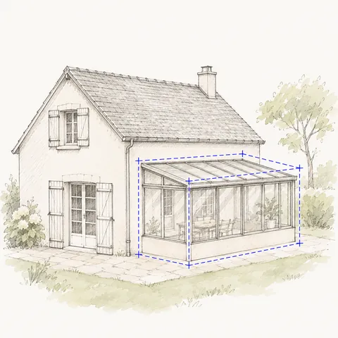

Vous vendez, et des travaux n'ont jamais été déclarés ?
Ça se régularise, dans la plupart des cas. Véranda, garage transformé, extension, abri : on vérifie d'abord si c'est possible, puis on prépare le dossier de mairie qui aurait dû être déposé. Vous avancez sur la vente avec une réponse claire.

Quelle démarche pour votre projet ?
| Votre situation | Ce qu'il faut |
|---|---|
| Travaux conformes aux règles d'aujourd'hui | Dossier de régularisation : déclaration préalable ou permis de construire, selon la surface |
| Travaux qui relevaient d'une déclaration préalable, finis depuis plus de 10 ans | En général couverts par la prescription. On vérifie la date et on vous dit si un dossier reste utile |
| Travaux qui relevaient d'un permis de construire | Pas de prescription de 10 ans : il faut régulariser, quel que soit leur âge |
| Travaux non conformes aux règles d'aujourd'hui | À modifier d'abord : on vous dit quoi |
La mairie juge le dossier avec les règles d'aujourd'hui, celles du PLU, le règlement de votre commune, pas celles de l'époque des travaux. Tant qu'elle n'a pas accordé la régularisation, les travaux restent sans autorisation.
Règles générales du code de l'urbanisme. Le plan local d'urbanisme de votre commune peut être plus strict : on le vérifie avec votre adresse avant de dessiner. Sources : Travaux sans autorisation : délais de prescription · Conseil d'État, 3 février 2017, n° 373898 · Déclaration préalable de travaux · Permis de construire. Mis à jour le 9 novembre 2026.
Ce qu'on vous demandera
Votre projet, sous la forme que vous avez : un croquis à main levée suffit. Vous l'envoyez après le paiement, depuis votre téléphone, avec un guide pas à pas.
- Le projetCe qui a été construit : type, dimensions, matériaux, et la date approximative des travaux
- Les mesuresLes dimensions de ce qui existe et la distance aux limites du terrain
- Les photosDes photos de ce qui est construit, la maison vue de la rue, le terrain vu de loin
Ce qu'on fait pour vous
D'abord, on étudie en entier le plan local d'urbanisme qui s'applique à votre terrain : le règlement de votre zone, les chapitres communs, le lexique, les protections. Distances aux voisins, hauteur, emprise, clôtures, couleurs : votre projet est confronté à chaque règle. Si votre projet ne passe pas tel quel, on vous le dit avant de commencer, avec la règle qui bloque : vous décidez de ce que vous changez. Ensuite on trace à l'échelle, d'après votre croquis et vos mesures, tous les plans demandés par la mairie, et on remplit le formulaire officiel. Une deuxième personne relit tout. Vous n'avez plus qu'à déposer, ou on dépose pour vous.
Comment ça se passe
- Vous décrivez ce qui a été fait. Le type de travaux, la surface, l'année approximative. Deux ou trois questions suffisent.
- On vérifie si c'est régularisable. Date des travaux, déclaration préalable ou permis de construire, règles actuelles de votre commune. Si ça ne passe pas, on vous le dit avant de dessiner.
- On dessine l'existant. À partir de vos photos et de vos mesures : plans, insertion dans le paysage, formulaire officiel.
- Vous déposez, ou on dépose pour vous. Vous recevez le récépissé de dépôt, à transmettre à votre notaire.
Ce qui fait échouer une régularisation
- Attendre le compromis. La mairie a un mois pour répondre à une déclaration préalable, deux en secteur protégé, plus si elle réclame des pièces.
- Croire que 10 ans suffisent toujours. La prescription ne couvre pas les travaux qui auraient demandé un permis de construire.
- Déclarer moins que ce qui existe. Une surface sous-estimée peut changer la démarche, et le dossier ne correspond plus à la construction.
- Oublier une partie des travaux. Une véranda régularisée sans le garage transformé à côté laisse le problème entier.
- Lancer de nouveaux travaux avant de régulariser. Une demande sur une construction irrégulière doit porter sur l'ensemble.
Questions fréquentes
Peut-on vendre une maison avec des travaux non déclarés ?
La vente n'est pas interdite. Mais le notaire relève souvent le problème, et l'acheteur ou sa banque peut demander que ce soit réglé avant de signer. Régulariser avant la mise en vente évite de bloquer la date.
Quel risque si des travaux ont été faits sans autorisation ?
C'est un délit. Pendant 6 ans après les travaux, une amende est possible, de 1 200 € à 300 000 € selon le cas. La régularisation, elle, peut être demandée à tout moment.
Mes travaux ont plus de 10 ans. Suis-je tranquille ?
Pas toujours. La prescription de 10 ans couvre les travaux faits sans déclaration préalable. Elle ne couvre pas ceux qui auraient demandé un permis de construire. On vérifie votre cas avec la date et la surface.
Les travaux ont été faits par l'ancien propriétaire. Qui doit régulariser ?
La demande est déposée par le propriétaire actuel, ou par une personne qu'il autorise. Si vous vendez, c'est donc à vous de la lancer avant la vente, ou d'en convenir avec l'acheteur.
La mairie peut-elle refuser ?
Oui, si les travaux ne respectent pas les règles d'urbanisme d'aujourd'hui. C'est justement ce qu'on vérifie en premier, avant de dessiner quoi que ce soit.
Combien de temps ça prend ?
Le dossier est prêt en 48 h après vos photos et vos mesures. Ensuite, la mairie a un mois pour répondre à une déclaration préalable, en général deux en secteur protégé, à compter d'un dossier complet.
J'ai plusieurs constructions non déclarées. Il faut plusieurs dossiers ?
Non. On les régularise dans un seul dossier, ce qui évite qu'une partie reste en suspens.
Que dois-je donner à mon notaire ?
Le récépissé de dépôt, puis la décision de la mairie quand elle arrive. On vous les envoie dans votre espace.
Si la mairie dit non à cause d'une erreur de notre part, on corrige et on redépose, sans frais.
La garantie ne couvre pas un refus lié à la construction elle-même : si les travaux ne respectent pas les règles actuelles de votre commune, vous le savez dès notre vérification, avant tout dessin.